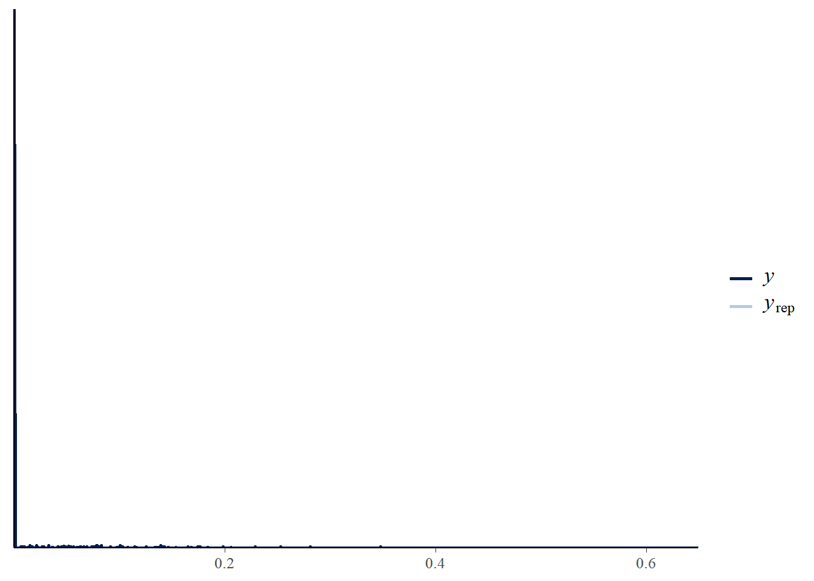
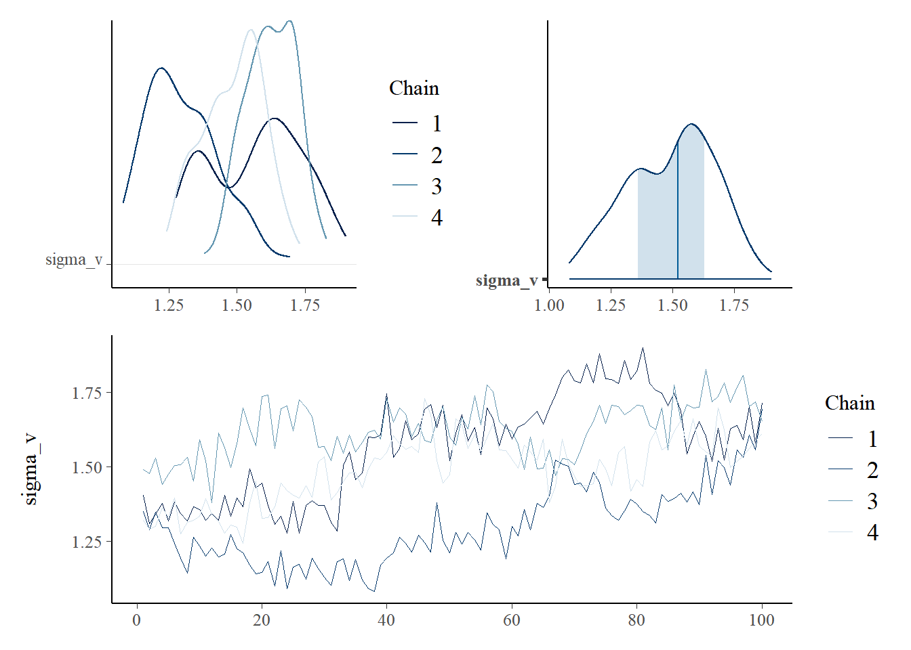
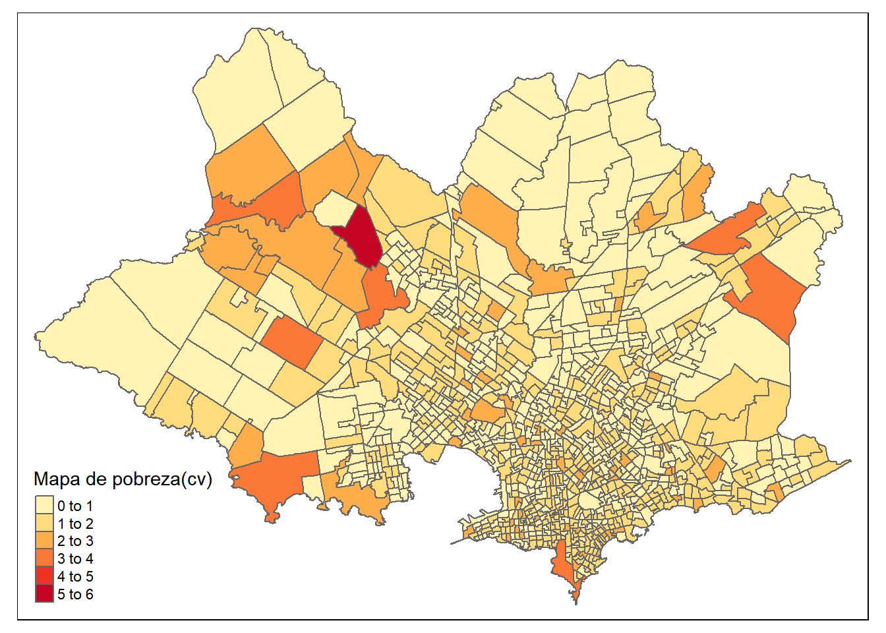

library(tidyverse)
library(magrittr)
base_FH <- readRDS("../Data/base_FH_2019.rds") %>%
select(segm,pobreza, n_eff_FGV) %>%
mutate(segm = str_pad(segm, width = 7, pad = "0") )
statelevel_predictors_df <- readRDS("../Data/statelevel_predictors_df.rds")
base_FH <- full_join(base_FH,statelevel_predictors_df, by = "segm" )Fay Herriot en R y STAN (Binomial-beta)
CEPAL - División de Estadísticas Sociales
Verosimilitud
\[ \begin{eqnarray*} y_{d}\mid p_{d}n_{d} & \sim & Bin\left(n_{d},p_{i}\right) \end{eqnarray*} \] para \(d=1,\dots,D\) y
\[ \begin{eqnarray*} logit\left(p_{d}\right)=\log\left(\frac{p_{d}}{1-p_{d}}\right) & = & \boldsymbol{x}_{d}^{T}\boldsymbol{\beta}+u_{d} \end{eqnarray*} \] donde \(u_{d}\sim N\left(0,\sigma_{u}^{2}\right)\) y \(n_{d}\) es el tamaño de la muestra para el área \(d\).
Es posible suponer que \[ \begin{eqnarray*} n_{d} & \sim & \frac{\check{p}_{d}\left(1-\check{p}_{d}\right)}{\widehat{Var}\left(\hat{p}_{d}\right)} \end{eqnarray*} \] donde \(\check{p}_{d}\) es una preliminar perdicción basada en el modelo para la proporción poblacional. Note que \(\tilde{y}_{d}=\tilde{n}_{d}\times\hat{p}_{d}\).
Suponga de las distribuciones previas para \(\boldsymbol{\beta}\) y \(\sigma_{u}^{2}\) son dadas por \[ \begin{eqnarray*} \boldsymbol{\beta} \sim N\left(\mu_{0},\tau_{0}\right)\\ \sigma_{u}^{2} \sim IG\left(\alpha_{1},\alpha_{2}\right) \end{eqnarray*} \]
Procesamiento en R
| segm | pobreza | n_eff_FGV | edad_15_29 | edad_30_44 | edad_45_64 | edad_65_más | años7_12 | Más_de_12 | Sin_educacion | Indigena | Otro | Hombre | Mujer | alfabeta | escolaridad | NBIAGUA | NBICALE | NBICALEF | NBICOC | NBICONF | NBIEDU | NBIELC | NBIHAC | NBIMAT | NBIREF | NBISAN | NBIVIV | F182013_stable_lights | X2016_crops.coverfraction | X2016_urban.coverfraction |
|---|---|---|---|---|---|---|---|---|---|---|---|---|---|---|---|---|---|---|---|---|---|---|---|---|---|---|---|---|---|---|
| 0101105 | 0.0000 | 27 | 0.3276 | 0.2054 | 0.1907 | 0.1760 | 0.4120 | 0.4487 | 0.0196 | 0.0222 | 1.0000 | 0.4205 | 0.5795 | 0.0000 | 0.5250 | 0.0000 | 0.0025 | 0.1337 | 0.0050 | 0.1584 | 0.0074 | 0.0000 | 0.0124 | 0 | 0.0371 | 0.0347 | 0.0173 | 2.9255 | 0 | 4.7216 |
| 0101204 | 0.0000 | 31 | 0.3886 | 0.1777 | 0.1963 | 0.1260 | 0.3820 | 0.3833 | 0.0252 | 0.0247 | 0.9999 | 0.4456 | 0.5544 | 0.0032 | 0.5000 | 0.0000 | 0.0110 | 0.2287 | 0.0083 | 0.2369 | 0.0028 | 0.0000 | 0.0083 | 0 | 0.0303 | 0.2121 | 0.0165 | 4.9412 | 0 | 7.6392 |
| 0101205 | 0.0000 | 40 | 0.2036 | 0.1915 | 0.2681 | 0.2692 | 0.3518 | 0.4748 | 0.0181 | 0.0155 | 1.0000 | 0.4425 | 0.5575 | 0.0022 | 0.5362 | 0.0019 | 0.0363 | 0.1683 | 0.0535 | 0.1740 | 0.0019 | 0.0000 | 0.0000 | 0 | 0.0688 | 0.1128 | 0.0535 | 2.9647 | 0 | 9.7725 |
| 0102001 | 0.0000 | 24 | 0.2208 | 0.2604 | 0.1760 | 0.1109 | 0.4527 | 0.1231 | 0.0732 | 0.0251 | 0.9999 | 0.4588 | 0.5412 | 0.0174 | 0.2012 | 0.0246 | 0.1230 | 0.3579 | 0.0874 | 0.3962 | 0.0519 | 0.0027 | 0.0765 | 0 | 0.0765 | 0.1749 | 0.1421 | 13.8275 | 0 | 4.0000 |
| 0103101 | 0.0265 | 43 | 0.2226 | 0.2008 | 0.2246 | 0.1418 | 0.4255 | 0.1925 | 0.0559 | 0.0111 | 0.9999 | 0.4689 | 0.5311 | 0.0057 | 0.2901 | 0.0025 | 0.0729 | 0.2136 | 0.0427 | 0.2487 | 0.0327 | 0.0025 | 0.0729 | 0 | 0.0553 | 0.1432 | 0.1055 | 8.4706 | 0 | 2.9569 |
| 0103201 | 0.0000 | 34 | 0.2253 | 0.2467 | 0.2352 | 0.1694 | 0.4309 | 0.2961 | 0.0378 | 0.0171 | 0.9999 | 0.4836 | 0.5164 | 0.0020 | 0.3916 | 0.0033 | 0.0261 | 0.1889 | 0.0098 | 0.2085 | 0.0163 | 0.0033 | 0.0098 | 0 | 0.0456 | 0.0912 | 0.0195 | 3.2941 | 0 | 1.2941 |
| 0103204 | 0.0000 | 27 | 0.2078 | 0.2667 | 0.2217 | 0.1984 | 0.3705 | 0.3411 | 0.0279 | 0.0340 | 0.9999 | 0.4605 | 0.5395 | 0.0036 | 0.4871 | 0.0000 | 0.0144 | 0.1960 | 0.0519 | 0.2133 | 0.0115 | 0.0000 | 0.0346 | 0 | 0.0461 | 0.0605 | 0.0807 | 3.8275 | 0 | 1.6863 |
| 0104001 | 0.0000 | 21 | 0.2792 | 0.2360 | 0.2313 | 0.1846 | 0.3995 | 0.4614 | 0.0222 | 0.0143 | 1.0000 | 0.4673 | 0.5327 | 0.0065 | 0.5265 | 0.0000 | 0.0329 | 0.1373 | 0.0077 | 0.1683 | 0.0000 | 0.0000 | 0.0309 | 0 | 0.0155 | 0.0213 | 0.0387 | 5.5098 | 0 | 5.3333 |
| 0104103 | 0.0000 | 63 | 0.2847 | 0.2206 | 0.2134 | 0.1694 | 0.3911 | 0.4217 | 0.0279 | 0.0310 | 1.0000 | 0.4440 | 0.5560 | 0.0007 | 0.5061 | 0.0000 | 0.0126 | 0.1792 | 0.0084 | 0.1971 | 0.0063 | 0.0000 | 0.0168 | 0 | 0.0314 | 0.1006 | 0.0241 | 5.4353 | 0 | 1.9765 |
| 0104104 | 0.0000 | 44 | 0.2077 | 0.2400 | 0.2503 | 0.1809 | 0.3755 | 0.3783 | 0.0406 | 0.0176 | 1.0000 | 0.4546 | 0.5454 | 0.0049 | 0.4563 | 0.0000 | 0.0082 | 0.1733 | 0.0027 | 0.1992 | 0.0055 | 0.0014 | 0.0150 | 0 | 0.0505 | 0.1023 | 0.0177 | 3.9529 | 0 | 1.6471 |
names_cov <-
statelevel_predictors_df %>%
data.frame() %>% select_if(is.numeric) %>% names()Estimaciones directas
data_dir <- base_FH %>%
filter(!is.na(pobreza),segm != "0111097")
## No observados
data_syn <-
base_FH %>% anti_join(data_dir %>% select(segm))Efectos fijos
## Dominios observados
Xdat <- data_dir[,names_cov]
## Dominios no observados
Xs <- data_syn[,names_cov]n_effec = round(data_dir$n_eff_FGV)
length(n_effec)[1] 463y_effect = round((data_dir$pobreza)*n_effec)
length(y_effect)[1] 463sample_data <- list(
N1 = nrow(Xdat), # Observados.
N2 = nrow(Xs), # NO Observados.
p = ncol(Xdat), # Número de regresores.
X = as.matrix(Xdat), # Covariables Observados.
Xs = as.matrix(Xs), # Covariables NO Observados
n_effec = n_effec,
y_effect = y_effect # Estimación directa.
)library(cmdstanr)
fit_FH_binomial <- cmdstan_model("../Data/modelosStan/FH_binomial.stan")
model_FH_Binomial <-
fit_FH_binomial$sample(
data = sample_data,
chains = 4,
parallel_chains = 4,
iter_warmup = 100,
iter_sampling = 100,
seed = 1234,
refresh = 200
)Running MCMC with 4 parallel chains...
Chain 1 Iteration: 1 / 200 [ 0%] (Warmup)
Chain 2 Iteration: 1 / 200 [ 0%] (Warmup)
Chain 3 WARNING: There aren't enough warmup iterations to fit the
Chain 3 three stages of adaptation as currently configured.
Chain 3 Reducing each adaptation stage to 15%/75%/10% of
Chain 3 the given number of warmup iterations:
Chain 3 init_buffer = 15
Chain 3 adapt_window = 75
Chain 3 term_buffer = 10
Chain 3 Iteration: 1 / 200 [ 0%] (Warmup)
Chain 4 Iteration: 1 / 200 [ 0%] (Warmup)
Chain 2 Iteration: 101 / 200 [ 50%] (Sampling)
Chain 1 Iteration: 101 / 200 [ 50%] (Sampling)
Chain 3 Iteration: 101 / 200 [ 50%] (Sampling)
Chain 4 Iteration: 101 / 200 [ 50%] (Sampling)
Chain 2 Iteration: 200 / 200 [100%] (Sampling)
Chain 2 finished in 19.0 seconds.
Chain 1 Iteration: 200 / 200 [100%] (Sampling)
Chain 1 finished in 19.3 seconds.
Chain 3 Iteration: 200 / 200 [100%] (Sampling)
Chain 4 Iteration: 200 / 200 [100%] (Sampling)
Chain 3 finished in 19.6 seconds.
Chain 4 finished in 19.6 seconds.
All 4 chains finished successfully.
Mean chain execution time: 19.4 seconds.
Total execution time: 19.8 seconds.Estimación (Observados)
y_pred_B <- model_FH_Binomial$draws(variables = "theta", format = "matrix")
rowsrandom <- sample(nrow(y_pred_B), 100)
y_pred2 <- y_pred_B[rowsrandom, ]Comparando predicción con las cadenas
library(bayesplot)
library(patchwork)
ppc_dens_overlay(y = as.numeric(data_dir$pobreza), y_pred2)
(mcmc_dens_chains(model_FH_Binomial$draws("sigma_v")) +
mcmc_areas(model_FH_Binomial$draws("sigma_v")))/
mcmc_trace(model_FH_Binomial$draws("sigma_v"))
theta_FH <- model_FH_Binomial$summary(variables = "theta")
data_dir %<>% mutate(pred_binomial = theta_FH$mean)
theta_FH_pred <- model_FH_Binomial$summary(variables = "thetaLP")
data_syn <- data_syn %>%
mutate(pred_binomial = theta_FH_pred$mean)Mapa de Montevideo
library(sp)
library(sf)
library(tmap)
data_map <- rbind(data_dir, data_syn) %>%
select(segm, pred_binomial)
## Leer Shape del pais
ShapeSAE <- read_sf("../Shape/ine_seg_11.shp")%>%
filter(nombdepto == "MONTEVIDEO") %>%
mutate(mpio = str_pad(codsec,width = 4,pad = "0"),
segm = str_pad(codseg,width = 7,pad = "0"))
mapa <- tm_shape(ShapeSAE %>%
left_join(data_map, by = "segm"))
brks_lp <- c(0,0.025,0.05, 0.1, 0.15, 0.2,0.4, 1)
tmap_options(check.and.fix = TRUE)
Mapa_lp <-
mapa + tm_polygons(
c("pred_binomial"),
breaks = brks_lp,
title = "Mapa de pobreza",
palette = "YlOrRd",
colorNA = "white"
) + tm_layout(asp = 0)
Mapa_lp